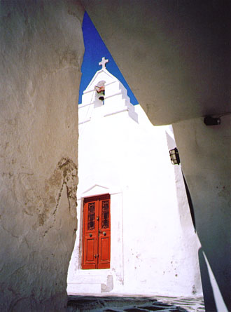

|  | Best of Show The Island of Mykonos, Greece “Free day” when we were ashore at Mykonos meant a chance to roam and explore completely at will and without hurry. Walking along a shaded passageway toward an overlook of the sea, I was stopped in my tracks by a brilliance in my peripheral vision. Turning, I saw that its source was the sunlight reflected by the whitewashed walls of a typical island church, now framed — Trinity-like — by a stairway and the wall of the passageway. With no one else about, I had the sensation that this church and this moment were there for me personally. |